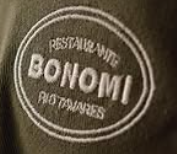
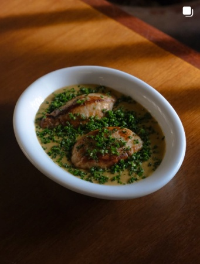
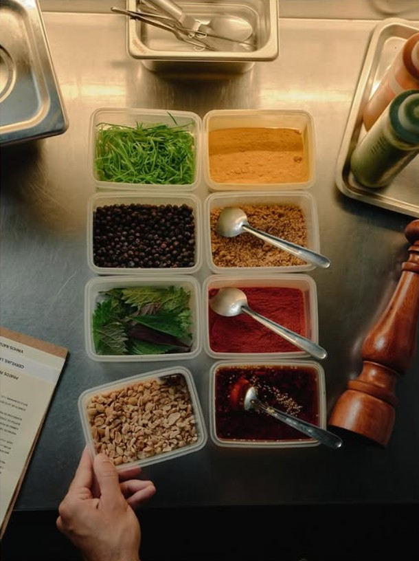

Atum, Curry, Vagem & Cebola Frita
Lombo de atum fresco selado no carvão incandescente, emulsão aromática de curry, vagem crocante e cebola frita artesanal.
Clássico da Casa

Sem cerimônias, sem garçom engravatado. O rigor de quem passou pelo D.O.M., Tuju e Boragó executado ao vivo em 50 lugares na Rodovia do Rio Tavares.



